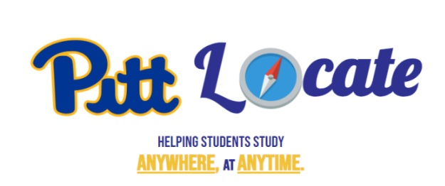
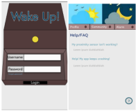
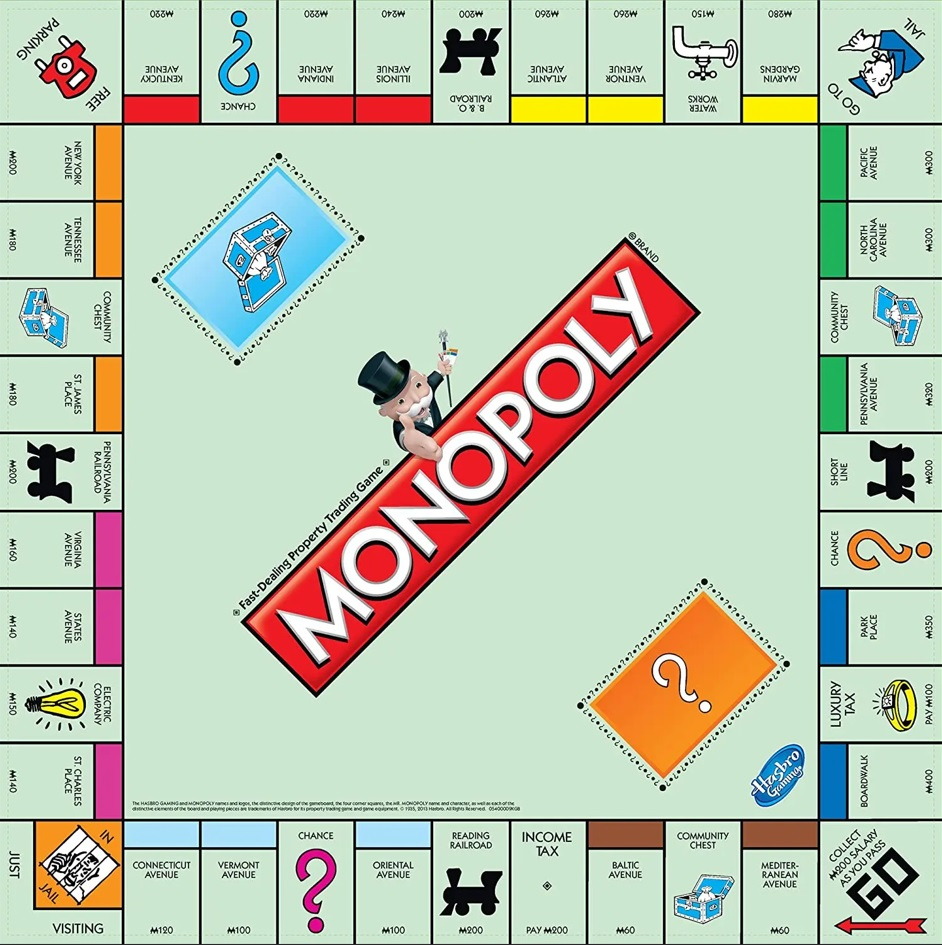
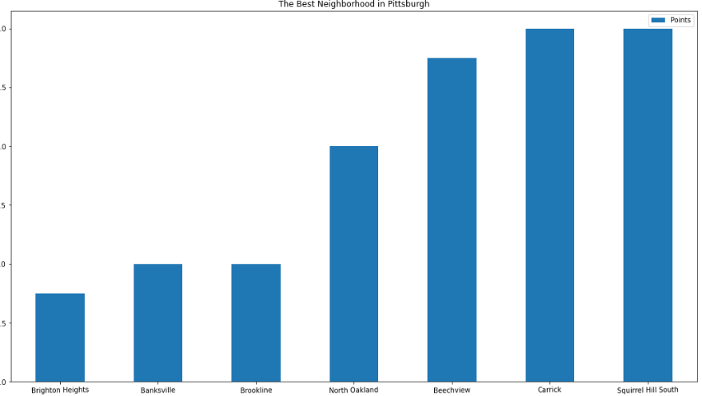

Pitt Locate
Project Description: PittLocate is a tool designed for students to search and locate open study spaces in some of the most popular study spots on campus. Through surveys, interviews, and collecting data, our team has discovered that at the University of Pittsburgh, students are having difficulty finding open spots to study, often reducing productivity and creating more traffic in and about educational buildings. PittLocate hopes to eliminate this problem, saving thousands of students their time and energy in the process, and helping students locate the study spaces they need in order to succeed. While we are just beginning our research and development phase we are particapting in the Randall Big Ideas contest to win money and an opportunity to further develop our idea.

Collaborators: Marko Melishchuk, Robert Grenda, Brendon Lee, Joshua Lee, Nate Stevens
Project Link
|
Wake Up
Project Description: This was a semester long project for my class: INFSCI 0410 Human Centered Systems. The goal of the project was to identify a problem we each face individually and design a proposal for a technological solution. The issue we identified was staying in bed for too long after the alarm clock has rung.
We created focus groups of our classmates to receive information, designed lo-fi & hi-fi prototypes of our idea, and evaluated our progress over the course of the semester.

Collaborators: Abby Zimmerman, Nix Garton, Sreeha Reddy, Michael Mason, Marko Melishchuk
Project link
|
MonoBot
Project Description: This is a machine learning project with the goal of developing the monopoly infrastructure and bots that can make advanced decisions based on a learning algorithm. We aim to have a value algorithm to inform the bots decision making.
This is a personal project with personal goals to apply my knowledge and skills to an original problem and to gain a hands-on understanding of: algorithm development, design testing, GUI construction, and machine learning.

Collaborators: Marko Melishchuk & Michael Wallison
Repo link
|
Best Neighborhood in Pittsburgh
Project Description: Our group decided to determine "the Best Neighborhood in Pittsburgh" by evaluating the most important factors which make a neighborhood the best place to comfortably raise a family.
We used public datasets that collected information from 1991-2021 to determine the best neighborhood in Pittsburgh. We had 3 parameters for which we constructed data frames and tables in python to narrow down our information.
We then assigned point values to the parameters and scored each neighborhood objectively to arrive at our conclusion the Squirrel Hill and Carrick are the "best" neighborhoods in Pittsburgh.

Collaborators: Kyle Visintainer, Olivia Terry, Marko Melishchuk
Repo link
|